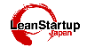
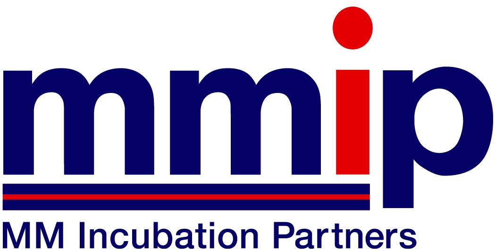
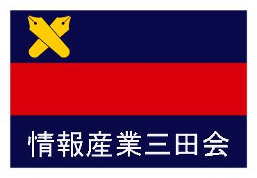

スポンサーシップ
協賛企業
KBC Business LeverageおよびKBC実行委員会のイベントは、下記協賛企業の皆さまに支えられて成り立っています。
ゴールドスポンサー |
||
| ユナイテッド株式会社 | ||
シルバースポンサー |
||
 |
||
| 株式会社セールスフォース・ドットコム | 日本メガソーラー整備事業株式会社 | 株式会社野心満々 |
| 弥生株式会社 | ||
ブロンズスポンサー |
||
| East Ventures | アーキタイプ株式会社 |
特別協力企業
|  | ||
| TECHFUND | 株式会社trippiece | Lean Startup Japan |  |
| 株式会社Wicrep | 株式会社クラウドワークス | ケアプロ株式会社 |
 |
||
| 株式会社サムライインキュベート | テラモーターズ株式会社 | ビズシード株式会社 |
| 株式会社ユビレジ |
後援組織
|  |  |
|
| MMインキュベーションパートナーズ | 慶應藤沢イノベーションビレッジ(SFC-IV) | メンター三田会 |
|  | ||
| 情報産業三田会 |
スポンサーをご検討頂ける皆様へ
KBC実行委員会のパートナーページをご覧いただき、誠にありがとうございます。 KBC実行委員会は2006年に創設以降、私たちのミッションである、 「未来への先導を果たす新事業の創出」を目指し、約100社の企業組織の皆様のご支援のもと、 活動を行って参りました。その結果、過去7年間に、私たちKBC実行委員会の活動から、 10件以上もの新事業が社会へ創出され、各分野で活躍をしております。 またそれだけには留まらず、慶應義塾大学を中心とする日本に一つしかない新事業支援コミュニティーが形成され、 私たちの周りでインキュベーション活動が活発化し始めました。 私たちは、このようなミッションへ共感してくださる素晴らしい企業の皆様と良好な関係を築き、 このコミュニティーを発展させていきたいと想い、日々活動を続けています。 そして、2013年度も限られた数ではありますが、 ミッションへ共感してくださる企業の皆様とのコラボレーションを通して、新しい事業を世に送り出したいと考えております。 スポンサーとしてご協力いただく企業の皆様には、 私たちの新しい事業を創造するコミュニティーのメンバーとなり、 ビジネスコンテストを始めとする諸イベントにて新事業創造とは何か、 その奥深さを体感していただけると思います。 また、それだけではなく新しい人との出会いを得ることができるでしょう。 私たちへのスポンサリングは「協賛」ではなく、「次の世代への投資」であり、 「新世代の創造である」と考えていただけると幸いです。 皆様のご支援、ご協力を心よりお待ち致しております。
スポンサーの方々のメリット
スポンサーシップの形については柔軟に検討させていただきます。ぜひご相談ください。 ・KBC実行委員会の開催するイベントへの審査員/メンターとしてのご協力 ・交流会へのご招待 ・KBC実行委員会のスポンサーページへのロゴの掲載 ・イベントの際に、スクリーンへ御社ロゴ及び社名の掲載
新たなパートナー制度
2012年度より、新たなパートナー制度を設けました。金銭的支援ではなく、KBC実行委員会の開催するイベントへの物品や技術サポートなどでご協力いただける皆様向けのスポンサリングプログラムです。
ご連絡
ご関心のある方がいらっしゃいましたら、下記連絡先までご連絡ください。 kbc-info@keio-contest.net